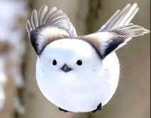

Morfología: Esta ave mide apenas entre 13 y 14 centímetros y pesa alrededor de 8 gramos. A pesar de su baja masa, posee una silueta marcadamente esférica. Tienen una cara blanca y una forma redonda, esponjosa parecida a un muñeco de nieve cuando mira hacia adelante. Durante el invierno, sus plumas blancas y esponjosas y su pico pequeño y triangular ayudan a retener el calor.